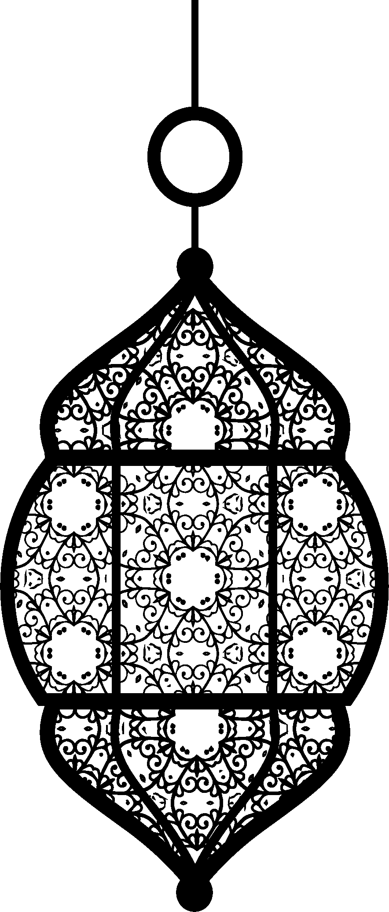

Ramadan ul Kareem
Time left till iftaar
:
:
Hijri 1441, Gregorian 2020
Schedule for Suhoor and Iftaar
Timezone: GMT +6:00
For Dhaka and near by districts
| Rahmat: 10 Days | |||||
|---|---|---|---|---|---|
| Ramadan | Date | Day | Suhoor | Fajr | Iftaar |
| 1 | 25 April | Saturday | 4.05 AM | 4.11 AM | 6.28 PM |
| 2 | 26 April | Sunday | 4.04 AM | 4.10 AM | 6.29 PM |
| 3 | 27 April | Monday | 4.03 AM | 4.09 AM | 6.29 PM |
| 4 | 28 April | Tuesday | 4.02 AM | 4.08 AM | 6.29 PM |
| 5 | 29 April | Wednesday | 4.01 AM | 4.07 AM | 6.30 PM |
| 6 | 30 April | Thursday | 4.00 AM | 4.06 AM | 6.30 PM |
| 7 | 1 May | Friday | 3.59 AM | 4.05 AM | 6.31 PM |
| 8 | 2 May | Saturday | 3.58 AM | 4.04 AM | 6.31 PM |
| 9 | 3 May | Sunday | 3.57 AM | 4.03 AM | 6.32 PM |
| 10 | 4 May | Monday | 3.55 AM | 4.01 AM | 6.32 PM |
| Magfiraat: 10 Days | |||||
| Ramadan | Date | Day | Suhoor | Fajr | Iftaar |
| 11 | 5 May | Tuesday | 3.54 AM | 4.00 AM | 6.33 PM |
| 12 | 6 May | Wednesday | 3.53 AM | 3.59 AM | 6.33 PM |
| 13 | 7 May | Thursday | 3.52 AM | 3.58 AM | 6.34 PM |
| 14 | 8 May | Friday | 3.51 AM | 3.57 AM | 6.34 PM |
| 15 | 9 May | Saturday | 3.50 AM | 3.56 AM | 6.35 PM |
| 16 | 10 May | Sunday | 3.50 AM | 3.56 AM | 6.35 PM |
| 17 | 11 May | Monday | 3.49 AM | 3.55 AM | 6.36 PM |
| 18 | 12 May | Tuesday | 3.49 AM | 3.55 AM | 6.36 PM |
| 19 | 13 May | Wednesday | 3.48 AM | 3.54 AM | 6.36 PM |
| 20 | 14 May | Thursday | 3.48 AM | 3.54 AM | 6.37 PM |
| Nazaat: 10 Days | |||||
| Ramadan | Date | Day | Suhoor | Fajr | Iftaar |
| 21 | 15 May | Friday | 3.47 AM | 3.53 AM | 6.37 PM |
| 22 | 16 May | Saturday | 3.47 AM | 3.53 AM | 6.38 PM |
| 23 | 17 May | Sunday | 3.46 AM | 3.52 AM | 6.38 PM |
| 24 | 18 May | Monday | 3.46 AM | 3.52 AM | 6.39 PM |
| 25 | 19 May | Tuesday | 3.45 AM | 3.51 AM | 6.39 PM |
| 26 | 20 May | Wednesday | 3.44 AM | 3.50 AM | 6.40 PM |
| 27 | 21 May | Thursday | 3.44 AM | 3.50 AM | 6.40 PM |
| 28 | 22 May | Friday | 3.43 AM | 3.49 AM | 6.41 PM |
| 29 | 23 May | Saturday | 3.43 AM | 3.49 AM | 6.42 PM |
| *30 | 24 May | Sunday | 3.42 AM | 3.48 AM | 6.42 PM |
*Depends on the sight of moon
Al-Quran
شَهْرُ رَمَضَانَ الَّذِي أُنزِلَ فِيهِ الْقُرْآنُ هُدًى لِّلنَّاسِ وَبَيِّنَاتٍ مِّنَ الْهُدَىٰ وَالْفُرْقَانِ ۚ فَمَن شَهِدَ مِنكُمُ الشَّهْرَ فَلْيَصُمْهُ ۖ وَمَن كَانَ مَرِيضًا أَوْ عَلَىٰ سَفَرٍ فَعِدَّةٌ مِّنْ أَيَّامٍ أُخَرَ ۗ يُرِيدُ اللَّهُ بِكُمُ الْيُسْرَ وَلَا يُرِيدُ بِكُمُ الْعُسْرَ وَلِتُكْمِلُوا الْعِدَّةَ وَلِتُكَبِّرُوا اللَّهَ عَلَىٰ مَا هَدَاكُمْ وَلَعَلَّكُمْ تَشْكُرُونَ
The month of Ramadan [is that] in which was revealed the Qur'an, a guidance for the people and clear proofs of guidance and criterion. So whoever sights [the new moon of] the month, let him fast it; and whoever is ill or on a journey - then an equal number of other days. Allah intends for you ease and does not intend for you hardship and [wants] for you to complete the period and to glorify Allah for that [to] which He has guided you; and perhaps you will be grateful.
- (Al-Baqarah: 185)
Niyat (Intention) for sawm
نَوَيْتُ اَنْ اُصُوْمَ غَدًا مِّنْ شَهْرِ رَمْضَانَ الْمُبَارَكِ فَرْضَا لَكَ يَا اللهُ فَتَقَبَّل مِنِّى اِنَّكَ اَنْتَ السَّمِيْعُ الْعَلِيْم
Nawaituan asumma gadam-min shahri ramadanal mubaraki fardallaka ya Allahu fataqabbal minni innaka antas-samiul 'aleem
Niyat (Intention) for iftaar
اللَّهُمَّ لَكَ صُمْتُ وَعَلَى رِزْقِكَ اَفْطَرْتُ
Allahumma laka sumtu wa 'ala rizqika aftartu